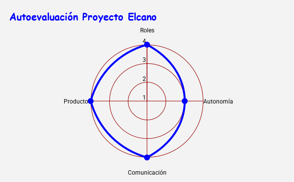

Estrategia de Evaluación Competencial
Para esta situación de aprendizaje de 2º ESO se implementa un diseño coherente que combina diferentes técnicas y medios digitales para permitir la triangulación de datos y la gestión de variables en el aula:
- Instrumento 1: Rúbrica Analítica en iDoceo, enfocada en evaluar de forma directa el desempeño en el trabajo cooperativo y la creación del mapa digital interactivo de ruta. Vinculada a los siguientes criterios: 1.1., 1.2., 2.1 y 3.1.
-Instrumento 2: Diana de evaluación en Google Sheets, en la que el alumnado completa una bitácora reflexiva en Google Forms que procesa los datos numéricos automáticamente en una hoja de cálculo, dibujando un gráfico radial. Mide 4 variable: roles, autonomía TIC, comunicación y calidad del producto.
Haz clic aquí para acceder al formulario de evaluación o diario de bitácora.
Tratamiento de variables y plan de acción:
Los datos de la diana se contrastan con la rúbrica del docente. Si se detecta un "hundimiento" visual en el eje de autonomía TIC, se activan adamiaje DUA (tutoriales de apoyo). Si la diana muestra alta comunicación pero la rúbrica del docente recoge conflictos o retrasos en las entregas parciales, se interviene con una entrevista de equipo enfocada en la regulación de las dinámicas de trabajo en futuros proyectos.
